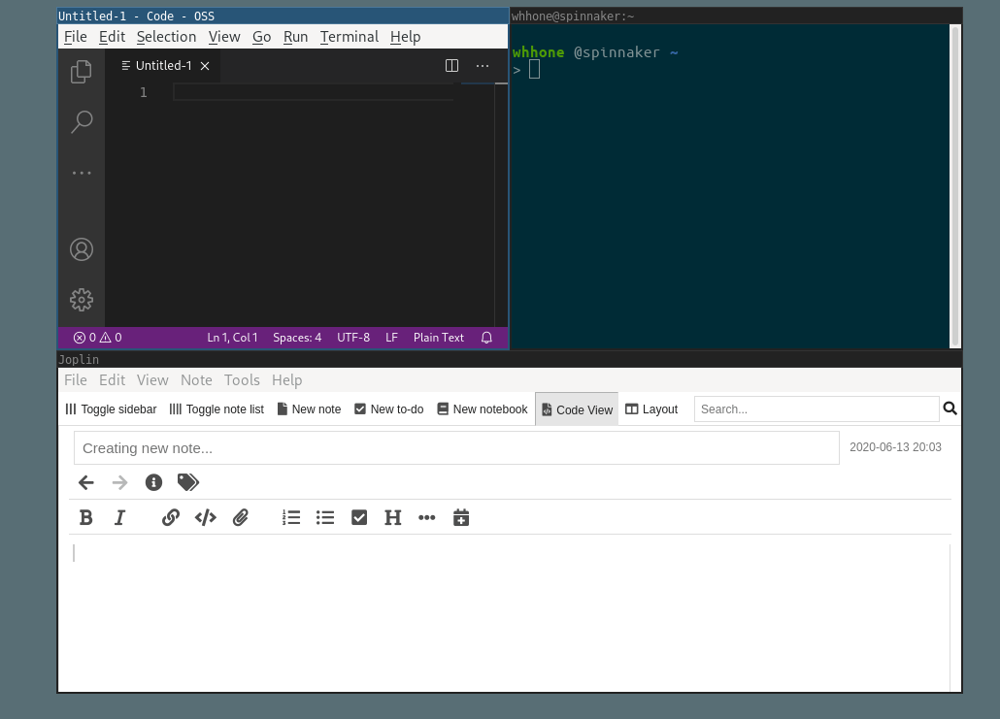

3 years ago, I switched from Mac OS back to Linux. The main reason was i3wm — a tiling window manager for Linux — and its way to switch between windows.
In this post, I am going to talk about how to switch windows on i3. But before that, let’s take a look at something we all know — Alt+Tab.
The Ergonomics Problem with Alt+Tab
Alt+Tab (or Command+Tab on Mac) is the most typical way to switch windows. It shows the list of opened windows, then the user presses Tab repeatedly to go to the next window, and release all keys to select.
These “find”s are distractions. Users need to switch context off from the real task, find the other window, switch context back to the real tasks. These “find”s could happen over a hundred times a day and they become more complex when the number of opened windows goes up.
For example, when coding, I switch between 4 windows, the IDE, the terminal, the browser, and the note app very often. Switching window with Alt+Tab could drain my mental energy surreptitiously. These four are just the minimum. In reality, the number could be double or triple, as there are multiple browser windows (not to mention the tabs inside…), and other random applications.
When I first met i3, it blew my mind with its alternatives to switch windows. Here are three ways I like,
- Scratchpad: Switch focus directly, without finding
- Move: Move to an adjacent window
- Match: Move to a window by string matching
1. Scratchpad – Switch to My Favorites
As the name indicates, this is useful for having a window with your favorite editor always at hand.
i3 User’s Guide
The first alternative is Scratchpad. It summons the targeted window directly, without finding it from the window list.
In the above screencast, Super+k focuses to the editor. Super+Enter focuses to the terminal. There is no finding in the whole flow, although I have more than 10 opened windows.
It works by putting the application to the background and focus to it when a user-defined hot-key is pressed. “Summoning” requires much less mental energy than “finding” when the hot-key becomes muscle memory.
The configuration is well-documented in the user guide. Here is the config for the above screencast:
# Make the currently focused window a scratchpad
bindsym $mod+Shift+minus move scratchpad
# Show the first scratchpad window
bindsym $mod+minus scratchpad show
# Show the terminal with Super+Enter
bindsym $mod+Return [class="Terminator"] scratchpad show
# Show the code editor with Super+k
bindsym $mod+k [class="code-oss"] scratchpad show
These window properties could find by xprop.
2. Move – Switch by What I See
The second alternative is moving to an adjacent window. In my opinion, it is more visually-intuitive and predictable than the Alt+Tab.

Moving to an adjacent window is the default mechanism of window switching, for most of the tiling window managers. I am not going to belabor here.
3. Match – Switch by What I Know
The last one in this post is matching. It matches and narrows down the list of windows.
In the above screencast, Super+g shows the list of all windows and I search for gedit by typing gedit.
It is powered by rofi, a window switcher, and application launcher, similar to Alfred for Mac OS. Here is the one-line configuration.
bindsym $mod+g exec "rofi -show window"
Conclusion
- Scratchpad has constant complexity — O(1) — no matter how much windows are there.
- Move is intuitive and predictable way to switch to what I can see.
- Match is especially useful to go to a particular window in another workspace.
Among all three, Scratchpad is the one I love most.
Credit: The GIFs in this post are created with peek and screenkey.